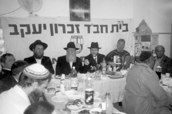

Matza from the Rebbe
This is a story about shmura matza that was given out by Rabbi Yosef Yitzchok Freiman, which led to momentous changes in the lives of a local family – a special story of matza, a dream, an apartment and a baby.

There are many special stories that resulted from the Rebbe’s Mivtza Matza, but the following story, which took place in Zichron Yaakov, home of the shliach Rabbi Yosef Yitzchok Freiman, is particularly outstanding.
A BRIS AND A HISTORY
In Teves 5761/2001, Rabbi Yossi Freiman was invited to a bris mila, taking place in the Yishuv Mevo Modiin. The Ashuach family was celebrating the bris of their newborn baby. The Ashuachs were friends of the Chabad house and had lived in Zichron Yaakov until two years prior to the story.
When Rabbi Freiman arrived a bit late to the bris, he was sure the bris had already taken place and that he would find the guests eating the seudas mitzva. To his great surprise, he found the crowd waiting expectantly. The baby’s father, Menachem Ashuach, a former Air Force pilot, fell upon him with open arms. “Aha, here you are. We have been waiting for you. You are honored to be the sandak for our dear son.” Rabbi Freiman hadn’t dreamed of receiving this honor.
Rabbi Freiman soon learned that the bris was the final event in a series of miracles that led the Ashuach family to become more involved in Judaism and Chabad. Rabbi Freiman explained how this came to be:
The Ashuach family lived on one of the northern kibbutzim until they moved to Zichron Yaakov. At a certain point, they began taking tentative steps in the direction of religious observance. They were a very intelligent family who became more involved in Jewish life with a great awareness of every step they were taking. Leaving the past was done slowly and with great thought. The process took a number of years until they were finally fully committed to an authentic Jewish lifestyle.
When they moved to Zichron Yaakov, they began attending the shiurim given at the Chabad house. Both the husband and wife were regular participants.
It was shortly before Pesach 5759/1999 and Rabbi Freiman was busy with Mivtza Matza, among the many other things he had to do for Yom Tov. He prepared dozens of packages of shmura matza for friends and mekuravim of the Chabad house.
One evening, he made the rounds, distributing the shmura matza. This was the first time the Ashuach family had heard of the idea of shmura matza. It was then that they had just begun taking their first steps towards religious observance. Rabbi Freiman gave them three matzos along with an explanation about the importance of eating shmura matza in particular, which is handmade and made l’sheim mitzva. He reminded them to sell their chametz, said a warm goodbye, and went on his way.
The phone rang early the next morning in the Freiman home. It was an emotional Mrs. Ashuach who asked, nay pleaded, for a piece of shmura matza for every member of her household.
“I could not understand what had prompted this urgent call,” recalls Rabbi Freiman. “I asked her, ‘I was at your home yesterday and you were satisfied with what I gave you. What changed overnight, and why the urgency?’
“The woman said, ‘The Lubavitcher Rebbe appeared to me in a dream last night and said that Rabbi Freiman had come to give us matzos not only because he knew us, but because he is an emissary of the Rebbe. Another thing that happened in the dream is that the Rebbe gave me a pen and said: Today you will find the apartment you want to buy in Yerushalayim.’
“I understood the reference to an apartment since I knew that they had been looking for a long time for an apartment in Yerushalayim, but hadn’t found anything suitable. At the Yud Shvat farbrengen of that year at the Chabad house, Mr. Ashuach had written a letter to the Rebbe asking for a bracha to find an apartment in Yerushalayim. We had put the note in a volume of Igros Kodesh and had opened it at random to a page with three short letters about the special quality of matza which is food of faith. At the time, I couldn’t explain what the Rebbe’s answer had to do with her request.
“‘So that is why I immediately called you to ask for matza for everyone,’ she concluded.”
“FOR US YOU ARE THE REBBE’S SHLIACH”
Rabbi Freiman continued:
“The woman was very excited. I said I would be happy to provide them with more matza. I suggested she stop by the Chabad house that evening. She showed up that night and was even more excited than she was that morning, for her dream had come true that very day!”
“‘This afternoon,’ said Mrs. Ashuach, ‘a real estate agent called my husband to suggest an apartment in Yerushalayim. After inquiring about the details and the price, it sounded like this was the apartment we had been looking for all these months. My husband called to discuss it and I told him this is definitely our apartment after the Rebbe said so in my dream.’ The contract was signed the very same day.
“They bought the apartment in Nachalaot. The Rebbe’s answer together with the dream was a significant factor in the family’s getting more involved in Judaism and Chabad.
“On Erev Pesach 5760, I heard a knock at the door. To my surprise, it was the Ashuach couple who said, ‘We came to get shmura matza again this year.’ I couldn’t help but ask them, ‘Last year you lived in Zichron Yaakov, but this year you live in Yerushalayim! Is there no shmura matza in Yerushalayim?!’
“They said, ‘The Rebbe told us in the dream that you are his shliach and so we came to get matza from you. Although we don’t live in Zichron Yaakov anymore, to us you are still the Rebbe’s shliach.’”
SURPRISE ENDING
At the end of Kislev 5761 the Ashuachs called Rabbi Freiman to tell him about the recent birth of their son and the bris that was to take place in a few days. The boy was born nine months after Pesach, when they had eaten the shmura matza. At the seuda, the father told his guests:
“For many years we wanted more children. Before the Pesach of last year we decided to get shmura matza from you, because we knew that in the merit of the matza that the Rebbe’s shliach gives, we would have a son. Indeed, nine months passed since that Pesach and now we are celebrating the bris.”
Today, the Ashuachs consider themselves a fervent Chassidic family. They don’t make a move without asking the Rebbe through the Igros Kodesh and receiving his bracha. “The miracles roll about under the table,” they say.
Shai Gefen. "Matza from the Rebbe." Beis Moshiach, no. 829 (March 29, 2012).